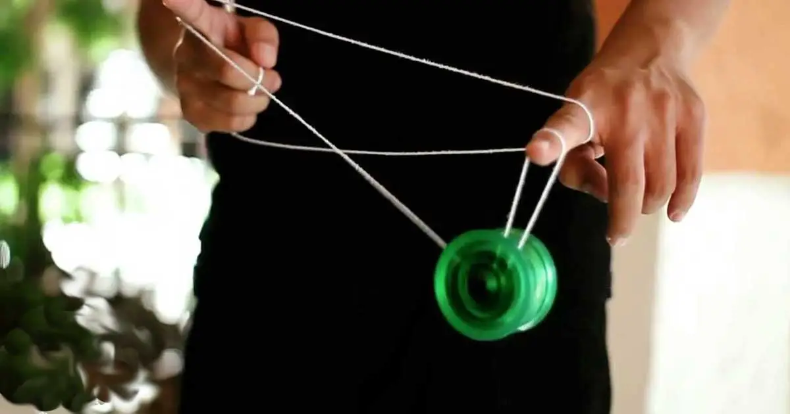

These are my Interests
1. I love to do theater because I love to act and love to be with my friends on a stage. I have been in 10-plus plays. My favorite play I have been in is Adam's Family because I loved the cast and the music. The backstage is small, but the warm-ups are fun. My favorite role is the genie from Aladin. The show had great music, and I had a good song. I spend days memorizing lines and learning my blocking (look it up).
2. I enjoy yoyoing because the thrill of playing yo yo is so fun to me. When I cango out with my yoyo and just focus on something that makes me happy I have a blissful moment and peaceful. I can practice the tricks I have spent many hours on and alarm new tricks by watching videos. My favorite yo yo player is Gentry Stein. I'm trying to learn the DNA right now and get better at that trick.My end goal with yo yoing is to learn how to do Godspeed.

3. I play video games with friends Because it is a fun social activity for me to spend with my colleagues and friends with whom I have become close over the last couple of years. Some of the video games I like to play are Minecraft and Brawl Stars. I like Minecraft because it is so calming and focused that you can play it with anyone, and they can all have their preference since it is a sandbox game. I enjoy Brawl Stars because of the competitive scene, the fact that all my friends play it, and the fact that you can get better with a skill-based system. Minecraft and Brawl Stars have new editions every year or even sooner than that for all-stars, which is really fun.